import numpy as np
import pandas as pd
import dabest
print("We're using DABEST v{}".format(dabest.__version__))We're using DABEST v2023.02.14As of v2023.02.14, DABEST can be used to produce Cohen’s h and the corresponding proportion plot for binary data. It’s important to note that the code we provide only supports numerical proportion data, where the values are limited to 0 (failure) and 1 (success). This means that the code is not suitable for analyzing proportion data that contains non-numeric values, such as strings like ‘yes’ and ‘no’.
import numpy as np
import pandas as pd
import dabest
print("We're using DABEST v{}".format(dabest.__version__))We're using DABEST v2023.02.14np.random.seed(9999) # Fix the seed so the results are replicable.
Ns = 40 # The number of samples taken from each population
# Create samples
n = 1
c1 = np.random.binomial(n, 0.2, size=Ns)
c2 = np.random.binomial(n, 0.2, size=Ns)
c3 = np.random.binomial(n, 0.8, size=Ns)
t1 = np.random.binomial(n, 0.5, size=Ns)
t2 = np.random.binomial(n, 0.2, size=Ns)
t3 = np.random.binomial(n, 0.3, size=Ns)
t4 = np.random.binomial(n, 0.4, size=Ns)
t5 = np.random.binomial(n, 0.5, size=Ns)
t6 = np.random.binomial(n, 0.6, size=Ns)
# Add a `gender` column for coloring the data.
females = np.repeat('Female', Ns / 2).tolist()
males = np.repeat('Male', Ns / 2).tolist()
gender = females + males
# Add an `id` column for paired data plotting.
id_col = pd.Series(range(1, Ns + 1))
# Combine samples and gender into a DataFrame.
df = pd.DataFrame({'Control 1': c1, 'Test 1': t1,
'Control 2': c2, 'Test 2': t2,
'Control 3': c3, 'Test 3': t3,
'Test 4': t4, 'Test 5': t5, 'Test 6': t6,
'Gender': gender, 'ID': id_col
})
df.head()| Control 1 | Test 1 | Control 2 | Test 2 | Control 3 | Test 3 | Test 4 | Test 5 | Test 6 | Gender | ID | |
|---|---|---|---|---|---|---|---|---|---|---|---|
| 0 | 1 | 1 | 0 | 0 | 1 | 0 | 0 | 1 | 0 | Female | 1 |
| 1 | 0 | 0 | 0 | 1 | 1 | 1 | 0 | 0 | 0 | Female | 2 |
| 2 | 0 | 0 | 0 | 0 | 1 | 0 | 1 | 1 | 0 | Female | 3 |
| 3 | 0 | 0 | 0 | 0 | 1 | 0 | 0 | 1 | 0 | Female | 4 |
| 4 | 0 | 1 | 0 | 0 | 1 | 0 | 0 | 0 | 1 | Female | 5 |
When loading data, specify proportional=True.
two_groups_unpaired = dabest.load(df, idx=("Control 1", "Test 1"), proportional=True)two_groups_unpairedDABEST v2023.02.14
==================
Good evening!
The current time is Sun Mar 19 22:41:40 2023.
Effect size(s) with 95% confidence intervals will be computed for:
1. Test 1 minus Control 1
5000 resamples will be used to generate the effect size bootstraps.For proportion plot, dabest features two effect sizes: - the mean difference (mean_diff) - Cohen’s h ([cohens_h](https://ZHANGROU-99.github.io/DABEST-python/API/effsize.html#cohens_h))
Each of these are attributes of the Dabest object.
two_groups_unpaired.mean_diffDABEST v2023.02.14
==================
Good evening!
The current time is Sun Mar 19 22:42:28 2023.
The unpaired mean difference between Control 1 and Test 1 is 0.375 [95%CI 0.15, 0.525].
The p-value of the two-sided permutation t-test is 0.0, calculated for legacy purposes only.
5000 bootstrap samples were taken; the confidence interval is bias-corrected and accelerated.
Any p-value reported is the probability of observing theeffect size (or greater),
assuming the null hypothesis ofzero difference is true.
For each p-value, 5000 reshuffles of the control and test labels were performed.
To get the results of all valid statistical tests, use `.mean_diff.statistical_tests`Let’s compute the Cohen’s h for our comparison.
two_groups_unpaired.cohens_hDABEST v2023.02.14
==================
Good evening!
The current time is Sun Mar 19 22:42:45 2023.
The unpaired Cohen's h between Control 1 and Test 1 is 0.825 [95%CI 0.33, 1.22].
The p-value of the two-sided permutation t-test is 0.0, calculated for legacy purposes only.
5000 bootstrap samples were taken; the confidence interval is bias-corrected and accelerated.
Any p-value reported is the probability of observing theeffect size (or greater),
assuming the null hypothesis ofzero difference is true.
For each p-value, 5000 reshuffles of the control and test labels were performed.
To get the results of all valid statistical tests, use `.cohens_h.statistical_tests`To produce a Gardner-Altman estimation plot, simply use the .plot() method.
Every effect size instance has access to the .plot() method. This means you can quickly create plots for different effect sizes easily.
two_groups_unpaired.mean_diff.plot();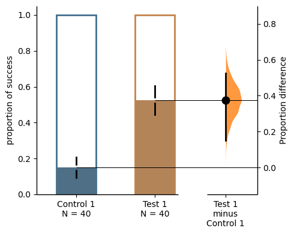
two_groups_unpaired.cohens_h.plot();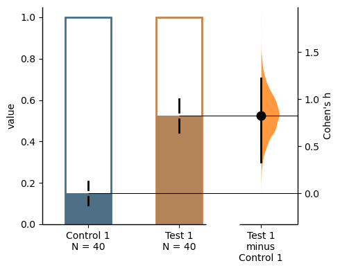
The white part in the bar represents the proportion of observations in the dataset that do not belong to the category, which is equivalent to the proportion of 0 in the data. The colored part, on the other hand, represents the proportion of observations that belong to the category, which is equivalent to the proportion of 1 in the data. By default, the value of ‘group_summaries’ is set to “mean_sd”. This means that the error bars in the plot display the mean and ± standard deviation of each group as gapped lines. The gap represents the mean, while the vertical ends represent the standard deviation. Alternatively, if the value of ‘group_summaries’ is set to “median_quartiles”, the median and 25th and 75th percentiles of each group are plotted instead. By default, the bootstrap effect sizes is plotted on the right axis.
Instead of a Gardner-Altman plot, you can produce a Cumming estimation plot by setting float_contrast=False in the plot() method. This will plot the bootstrap effect sizes below the raw data.
two_groups_unpaired.mean_diff.plot(float_contrast=False);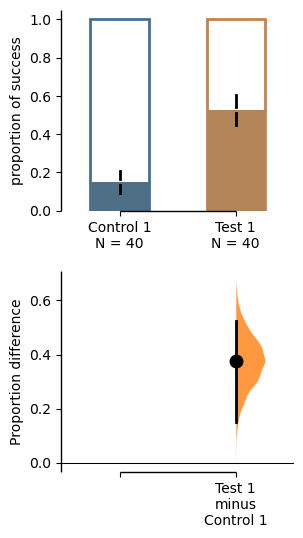
You can also modify the width of bars as you expect by setting bar_width in the plot() method.
two_groups_unpaired.mean_diff.plot(bar_width=0.3);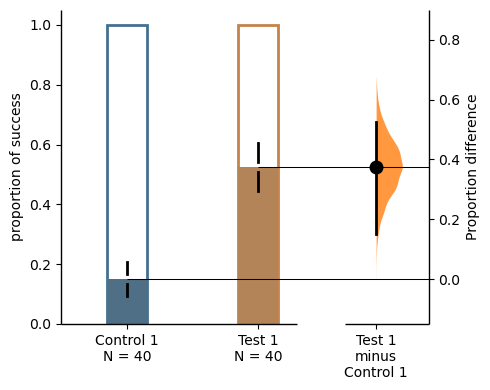
The bar_desat is used to control the amount of desaturation applied to the bar colors. A value of 0.0 means full desaturation (i.e., grayscale), while a value of 1.0 means no desaturation (i.e., full color saturation). Default is 0.8.
two_groups_unpaired.mean_diff.plot(bar_desat=1.0);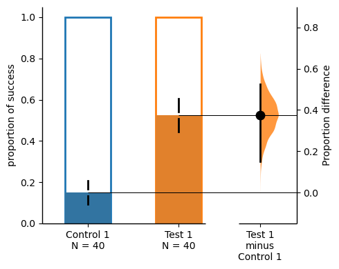
bar_label and contrast_label can be used to set labels for the y-axis of the bar plot and the contrast plot.
two_groups_unpaired.mean_diff.plot(bar_label="success",contrast_label="difference");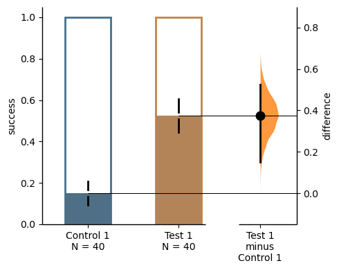
The color of error bar can be modified by setting ‘err_color’.
two_groups_unpaired.mean_diff.plot(err_color="purple");two_groups_unpaired.cohens_h.results| control | test | control_N | test_N | effect_size | is_paired | difference | ci | bca_low | bca_high | ... | pvalue_permutation | permutation_count | permutations_var | pvalue_welch | statistic_welch | pvalue_students_t | statistic_students_t | pvalue_mann_whitney | statistic_mann_whitney | proportional_difference | |
|---|---|---|---|---|---|---|---|---|---|---|---|---|---|---|---|---|---|---|---|---|---|
| 0 | Control 1 | Test 1 | 40 | 40 | Cohen's h | None | 0.825418 | 95 | 0.329684 | 1.219937 | ... | 0.0 | 5000 | [0.011266025641025641, 0.011266025641025641, 0... | 0.000289 | -3.81474 | 0.000271 | -3.81474 | 0.000434 | 500.0 | 0.825418 |
1 rows × 28 columns
two_groups_unpaired.mean_diff.plot();
two_groups_unpaired.cohens_h.plot();The white part in the bar represents the proportion of observations in the dataset that do not belong to the category, which is equivalent to the proportion of 0 in the data. The colored part, on the other hand, represents the proportion of observations that belong to the category, which is equivalent to the proportion of 1 in the data. By default, the value of “group_summaries” is set to “mean_sd”. This means that the error bars in the plot display the mean and ± standard deviation of each group as gapped lines. The gap represents the mean, while the vertical ends represent the standard deviation. Alternatively, if the value of “group_summaries” is set to “median_quartiles”, the median and 25th and 75th percentiles of each group are plotted instead. By default, the bootstrap effect sizes is plotted on the right axis.
Instead of a Gardner-Altman plot, you can produce a Cumming estimation plot by setting float_contrast=False in the plot() method. This will plot the bootstrap effect sizes below the raw data.
two_groups_unpaired.mean_diff.plot(float_contrast=False);For paired version of proportional plot, we adapt the style of Sankey Diagram. The width of each bar in each xticks represent the proportion of corresponding label in the group, and the strip denotes the paired relationship for each observation.
Similar to the unpaired version, the .plot() method is used to produce a Gardner-Altman estimation plot, the only difference is that the is_paired parameter is set to either baseline or sequential when loading data.
two_groups_baseline = dabest.load(df, idx=("Control 1", "Test 1"),
proportional=True, paired="baseline", id_col="ID")
two_groups_baseline.mean_diff.plot();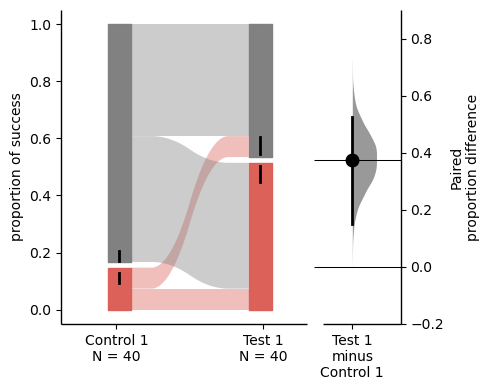
The paired proportional plot also supports the float_contrast parameter, which can be set to False to produce a Cumming estimation plot.
two_groups_baseline.mean_diff.plot(float_contrast=False);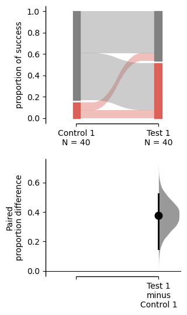
The upper part (grey part) of the bar represents the proportion of observations in the dataset that do not belong to the category, which is equivalent to the proportion of 0 in the data. The lower part, on the other hand, represents the proportion of observations that belong to the category, which is or success, which is equivalent to the proportion of 1 in the data.
Repeated measures is also supported in paired proportional plot, by changing the is_paired parameter, two types of plot can be produced.
multi_group_baseline = dabest.load(df, idx=((("Control 1", "Test 1","Test 2", "Test 3"),
("Test 4", "Test 5", "Test 6"))),
proportional=True, paired="baseline", id_col="ID")
multi_group_baseline.mean_diff.plot();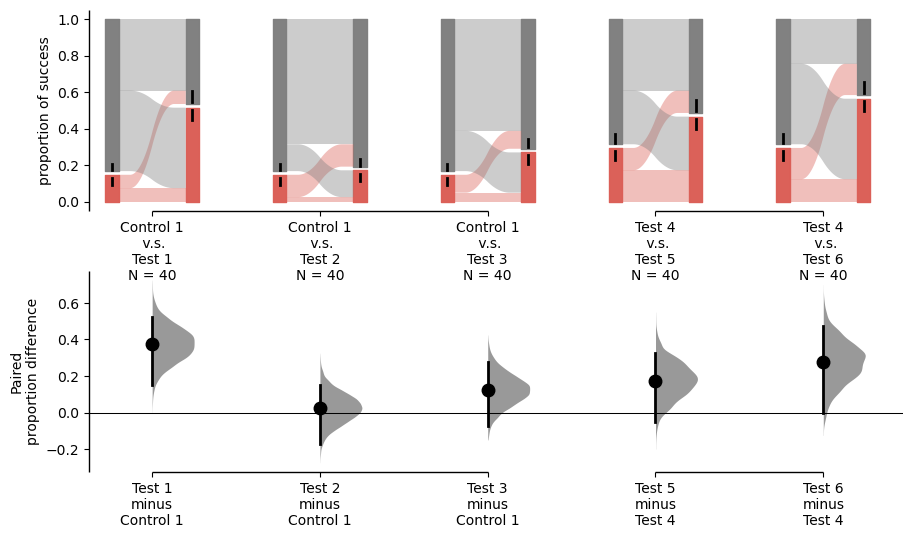
multi_group_sequential = dabest.load(df, idx=((("Control 1", "Test 1","Test 2", "Test 3"),
("Test 4", "Test 5", "Test 6"))),
proportional=True, paired="sequential", id_col="ID")
multi_group_sequential.mean_diff.plot();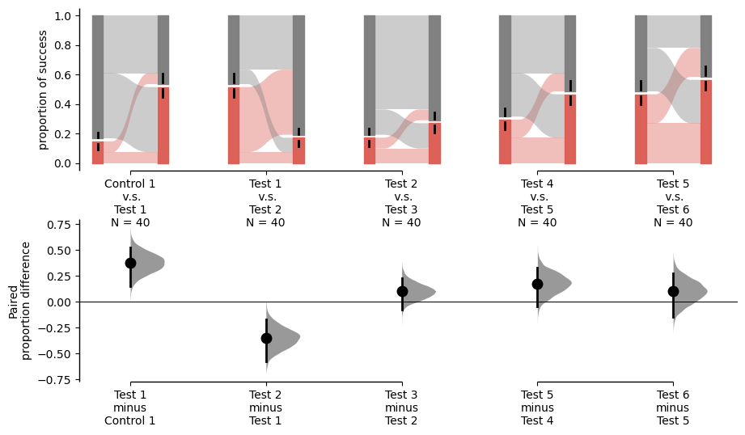
From the above two images, we can see that the on both the observed value plot and delta plot, the pairs compared are different in terms of the paired settings. And for detailed information about repeated measures, please refer to :doc:repeatedmeasures .
If you want to specify the order of the groups, you can use the idx parameter in the .load() method.
For all the groups to be compared together, you can put all the groups in the idx parameter in the .load() method without subbrackets.
multi_group_baseline_specify = dabest.load(df, idx=(("Control 1", "Test 1","Test 2", "Test 3",
"Test 4", "Test 5", "Test 6")),
proportional=True, paired="baseline", id_col="ID")
multi_group_baseline_specify.mean_diff.plot();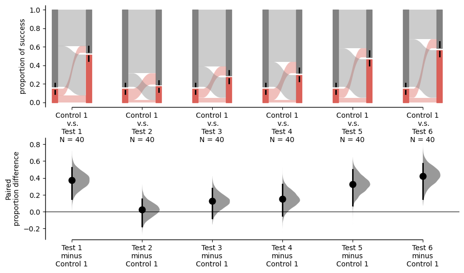
Several exclusive parameters can be supplied to the plot() method to customize the paired proportional plot. By updating the sankey_kwargs parameter, you can customize the Sankey plot. The following parameters are supported:
two_groups_baseline.mean_diff.plot(sankey_kwargs = {"alpha": 0.2});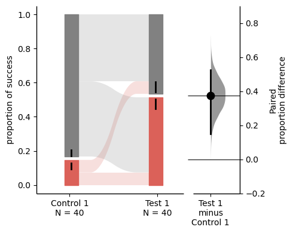